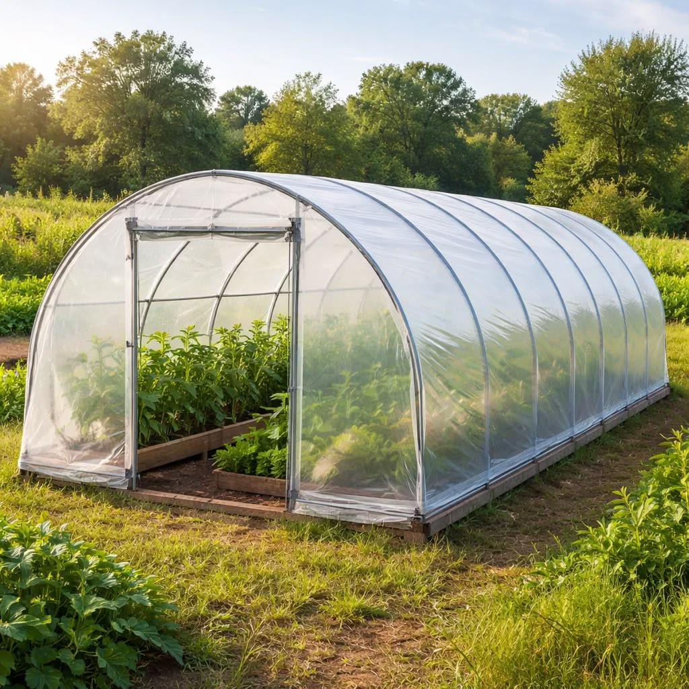
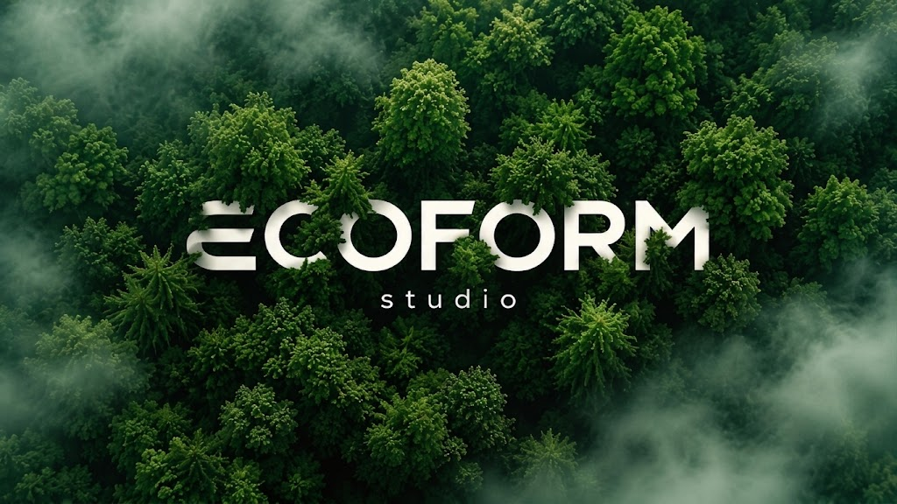

Design
Architecture and interior spaces shaped around people, climate, and context.

ABOUT ECOFORM STUDIO
We bring architecture, landscape, and sustainable ideas together to create thoughtful spaces for better living.
OUR APPROACH
ECOFORM STUDIO explores the relationship between people, buildings, and the environment. Our approach balances function, material, context, and timeless aesthetics from the first concept to the final visualization.

Architecture and interior spaces shaped around people, climate, and context.

Ideas that support greener systems, responsible materials, and sustainable living.